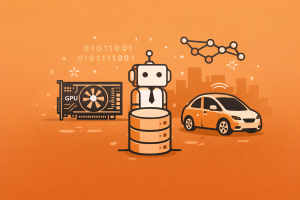

%%{init: {'theme': 'base', 'themeVariables': {'fontSize': '14px'}}}%%
timeline
title 2000s AI Milestones — Big Data, GPUs, and the Dawn of Deep Learning
2001 : Leo Breiman publishes Random Forests
2004 : DARPA Grand Challenge — autonomous vehicles fail the desert course
: Google MapReduce paper — foundation for big data processing
2005 : DARPA Grand Challenge — Stanford's Stanley drives 132 miles across the Mojave Desert
2006 : Hinton & Salakhutdinov publish Deep Belief Networks — greedy layer-wise pretraining
: Fei-Fei Li begins work on ImageNet — 14 million labeled images
: Netflix Prize launched — $1M for recommendation algorithm improvement
: NVIDIA releases GeForce 8800 GTX — first CUDA-capable GPU
2007 : DARPA Urban Challenge — CMU's Boss navigates city traffic autonomously
: NVIDIA officially releases CUDA — GPU computing for AI
2009 : Google self-driving car project begins (later becomes Waymo)
: Deep supervised networks win German Traffic Sign Recognition benchmark
: ImageNet Large Scale Visual Recognition Challenge (ILSVRC) begins
: Netflix Prize won by BellKor's Pragmatic Chaos
2000s AI Milestones
Big Data, GPUs, and the Dawn of Deep Learning — how massive datasets, parallel computing, and autonomous vehicles set the stage for the AI revolution
Keywords: AI history, 2000s AI, deep learning, GPU computing, CUDA, NVIDIA, ImageNet, Fei-Fei Li, deep belief networks, Geoffrey Hinton, DARPA Grand Challenge, Stanley, Boss, autonomous vehicles, self-driving cars, Google self-driving car, Waymo, Netflix Prize, recommendation systems, big data, MapReduce, reinforcement learning, speech recognition, random forests, consumer AI, spam filtering, fraud detection, Sebastian Thrun, machine learning competitions

Introduction
The 2000s were the decade that built the infrastructure for the AI revolution. While the breakthroughs that would captivate the world — AlexNet, AlphaGo, GPT — were still years away, every essential ingredient was assembled during this extraordinary period. The explosion of digital data, the repurposing of GPUs for scientific computing, the creation of massive labeled datasets, and the revival of deep neural networks all converged to create the conditions that would ignite the modern AI era.
This was the decade when data became the new oil. The rise of the World Wide Web, social media, smartphones, and ubiquitous sensors generated data at a scale no previous era could have imagined. Google processed billions of search queries. Facebook accumulated billions of photos. Amazon tracked millions of purchase patterns. Netflix logged billions of movie ratings. For the first time in history, there was enough data to train algorithms that could genuinely learn complex patterns — if only researchers could find the computational power to process it all.
The answer came from an unexpected source: graphics processing units. Originally designed to render video game graphics, GPUs turned out to be perfectly suited for the massively parallel matrix operations that neural networks require. When NVIDIA released CUDA in 2007, it gave researchers a practical way to harness thousands of parallel processing cores for general-purpose computing — transforming gaming hardware into the workhorse of scientific AI research.
Meanwhile, Fei-Fei Li was quietly assembling ImageNet, a dataset of 14 million labeled images that would become the benchmark for an entire generation of computer vision research. And Geoffrey Hinton was demonstrating that deep neural networks could actually be trained effectively using greedy layer-wise pretraining — solving a problem that had stymied the field for decades.
On the roads, DARPA’s Grand Challenges proved that autonomous vehicles could navigate real-world environments — from the desert to city streets. The veterans of these competitions went on to found the self-driving car programs at Google, Uber, and beyond. And in living rooms everywhere, AI was becoming invisible: spam filters, recommendation engines, fraud detection systems, and voice assistants were quietly transforming everyday life.
This article traces the key milestones of the 2000s — from the big data explosion and GPU revolution to the autonomous vehicles and deep learning breakthroughs that made the modern AI era possible.
Timeline of Key Milestones
The Big Data Explosion (2000s)
The most transformative force of the 2000s wasn’t a single algorithm or breakthrough — it was the unprecedented explosion of digital data. For the first time in history, humanity was generating more data than it could possibly process manually, and this avalanche of information fundamentally changed what was possible in artificial intelligence.
The sources were everywhere. The World Wide Web grew from roughly 17 million websites in 2000 to over 230 million by 2009. Google indexed billions of web pages and processed billions of search queries daily. Social media platforms — Facebook (2004), YouTube (2005), Twitter (2006) — generated massive streams of text, images, and video. Amazon and Netflix tracked millions of user interactions. Smartphones equipped with cameras, GPS, and accelerometers became ubiquitous data generators. And industrial sensors, medical devices, and scientific instruments added billions more data points.
| Aspect | Details |
|---|---|
| Era | 2000–2009 |
| Key drivers | Web growth, social media, smartphones, sensors, e-commerce |
| Scale | From terabytes to petabytes of daily data generation |
| Key insight | More data + right algorithms > clever algorithms + small data |
| Infrastructure | Google MapReduce (2004), Hadoop (2006), cloud computing |
| Impact on AI | Enabled data-hungry statistical and neural network methods |
In the 2000s, AI researchers discovered that the biggest bottleneck wasn’t algorithms — it was data. Given enough examples, even simple methods could outperform sophisticated approaches trained on small datasets.
The Google MapReduce paper (2004) and the open-source Hadoop framework (2006) provided the infrastructure to process these massive datasets across clusters of commodity computers. This wasn’t just an engineering convenience — it was a paradigm shift. Suddenly, researchers could train models on datasets orders of magnitude larger than anything previously possible.
graph TD
A["Web & Social Media<br/>(billions of pages,<br/>posts, photos)"] --> E["Big Data<br/>Infrastructure"]
B["E-commerce<br/>(Amazon, Netflix,<br/>eBay transactions)"] --> E
C["Smartphones<br/>(GPS, cameras,<br/>accelerometers)"] --> E
D["Sensors & IoT<br/>(industrial, medical,<br/>scientific data)"] --> E
E --> F["MapReduce / Hadoop<br/>Distributed Processing"]
F --> G["Machine Learning<br/>at Scale"]
G --> H["Better AI:<br/>Recommendations,<br/>Search, Translation"]
style A fill:#3498db,color:#fff,stroke:#333
style B fill:#e74c3c,color:#fff,stroke:#333
style C fill:#27ae60,color:#fff,stroke:#333
style D fill:#8e44ad,color:#fff,stroke:#333
style E fill:#f39c12,color:#fff,stroke:#333
style F fill:#2980b9,color:#fff,stroke:#333
style G fill:#1a5276,color:#fff,stroke:#333
style H fill:#e67e22,color:#fff,stroke:#333
Random Forests: Ensemble Learning at Scale (2001)
In 2001, Leo Breiman published his landmark paper on Random Forests — an ensemble learning method that combined hundreds or thousands of decision trees to produce remarkably accurate and robust predictions. Building on earlier work on bagging and random subspace methods, Random Forests became one of the most widely used machine learning algorithms in both research and industry.
The elegance of Random Forests lay in their simplicity and power: train many decision trees on random subsets of the data and features, then let them vote on the final prediction. This approach naturally handled high-dimensional data, resisted overfitting, and required minimal tuning — making it the go-to algorithm for practitioners who needed reliable results without deep expertise in model selection.
| Aspect | Details |
|---|---|
| Published | 2001, Machine Learning journal |
| Author | Leo Breiman (UC Berkeley) |
| Method | Ensemble of randomized decision trees with bagging |
| Key insight | Combining many weak learners produces a strong learner |
| Advantages | Handles high dimensionality, resistant to overfitting, minimal tuning |
| Applications | Genomics, ecology, finance, medical diagnosis, remote sensing |
Random Forests democratized machine learning. For the first time, practitioners in fields far from computer science could apply powerful prediction methods to their data without a PhD in statistics.
DARPA Grand Challenge: Autonomous Vehicles Take the Stage (2004–2005)
The DARPA Grand Challenge was one of the most dramatic demonstrations of AI in the 2000s — a series of competitions that pushed autonomous vehicle technology from the realm of science fiction into reality. Funded by the U.S. Department of Defense, these challenges offered million-dollar prizes for vehicles that could navigate real-world courses without any human intervention.
The 2004 Challenge: A Humbling Failure
The first Grand Challenge in March 2004 asked autonomous vehicles to traverse a 142-mile desert course between Barstow, California, and Primm, Nevada. The result was humbling: no vehicle completed the course. The best performer, Carnegie Mellon’s Sandstorm, traveled only 7.36 miles before getting stuck. Most vehicles failed within the first few miles. The competition laid bare just how far autonomous driving technology had to go.
The 2005 Challenge: Stanley Conquers the Desert
Just 18 months later, the improvement was staggering. In the second Grand Challenge on October 8, 2005, five vehicles completed a 132-mile desert course across the Mojave Desert. The winner was Stanley, a modified Volkswagen Touareg built by Stanford University’s team led by Sebastian Thrun. Stanley completed the course in 6 hours and 53 minutes at an average speed of 19.1 mph — using LIDAR, GPS, cameras, and machine learning algorithms to distinguish road from desert terrain in real time.
| Aspect | Details |
|---|---|
| 2004 Challenge | 142-mile desert course; no vehicle finished; best: 7.36 miles |
| 2005 Challenge | 132-mile desert course; 5 vehicles finished |
| Winner (2005) | Stanley (Stanford Racing Team, led by Sebastian Thrun) |
| Time | 6 hours 53 minutes (average 19.1 mph) |
| 2nd Place | Sandstorm (CMU Red Team) — 7:05 |
| 3rd Place | H1ghlander (CMU Red Team Too) — 7:14 |
| Key technologies | LIDAR, GPS, cameras, machine learning for terrain classification |
graph LR
A["DARPA Grand Challenge<br/>2004<br/>All vehicles fail"] --> B["DARPA Grand Challenge<br/>2005<br/>Stanley wins — 132 mi"]
B --> C["DARPA Urban Challenge<br/>2007<br/>Boss navigates city traffic"]
C --> D["Google Self-Driving<br/>Car Project<br/>2009"]
D --> E["Waymo, Cruise,<br/>Aurora, Argo AI<br/>2010s–2020s"]
style A fill:#e74c3c,color:#fff,stroke:#333
style B fill:#27ae60,color:#fff,stroke:#333
style C fill:#3498db,color:#fff,stroke:#333
style D fill:#8e44ad,color:#fff,stroke:#333
style E fill:#1a5276,color:#fff,stroke:#333
The DARPA Grand Challenge proved that autonomous driving was not a fantasy but an engineering problem — one that could be solved with enough sensors, computing power, and the right algorithms.
Deep Belief Networks: Reviving Deep Learning (2006)
In 2006, Geoffrey Hinton and Ruslan Salakhutdinov published a paper that would reignite interest in deep neural networks after decades of skepticism. Their work on Deep Belief Networks (DBNs) demonstrated that deep networks with many layers could be effectively trained using a technique called greedy layer-wise pretraining.
The fundamental problem had been clear since the 1990s: while shallow neural networks (with one or two hidden layers) could be trained with backpropagation, deeper networks suffered from the vanishing gradient problem — gradients became vanishingly small as they propagated through many layers, making training impossibly slow. Most researchers had concluded that deep networks were simply impractical.
Hinton’s insight was elegant: instead of trying to train the entire network at once, you could train it one layer at a time using Restricted Boltzmann Machines (RBMs) — a type of unsupervised generative model. Each layer learned to represent the output of the previous layer, building increasingly abstract representations from raw data. After this unsupervised pretraining, the entire network could be fine-tuned with standard backpropagation.
| Aspect | Details |
|---|---|
| Published | 2006, Science (reducing dimensionality) and Neural Computation (fast learning algorithm) |
| Authors | Geoffrey Hinton, Ruslan Salakhutdinov (University of Toronto) |
| Method | Greedy layer-wise pretraining with Restricted Boltzmann Machines |
| Key insight | Deep networks can be trained by unsupervised pretraining + supervised fine-tuning |
| Problem solved | Vanishing gradient problem in deep network training |
| Impact | Revived interest in neural networks; launched the “deep learning” movement |
Hinton showed that the problem with deep networks wasn’t the architecture — it was the training procedure. With the right initialization, deep networks could learn representations that shallow networks never could.
This breakthrough didn’t produce immediate commercial applications, but it fundamentally changed the trajectory of AI research. It demonstrated that depth — having many layers of learned representations — was the key to building systems that could learn complex, hierarchical features from raw data. The deep learning revolution of the 2010s traces directly back to this moment.
ImageNet: The Dataset That Changed Everything (2006–2009)
In 2006, Fei-Fei Li, then an assistant professor at Princeton (later Stanford), began work on what would become the most consequential dataset in the history of computer vision. ImageNet aimed to provide a comprehensive, large-scale visual database organized according to the WordNet hierarchy — ultimately containing over 14 million hand-labeled images across more than 20,000 categories.
The ambition was audacious. At a time when most computer vision datasets contained thousands or tens of thousands of images, Li envisioned a dataset with millions. She recruited workers from 167 countries via Amazon Mechanical Turk to classify and verify images — ultimately employing 49,000 workers over nearly two years. Each image was labeled three times for accuracy.
Li presented ImageNet for the first time as a poster at CVPR 2009 in Florida. In 2010, the ImageNet Large Scale Visual Recognition Challenge (ILSVRC) was launched — a competition where teams competed to classify images into 1,000 categories. The first competitions were won by traditional methods using support vector machines and hand-crafted features. But in 2012, AlexNet — a deep convolutional neural network trained on GPUs — would shatter all previous results and launch the deep learning revolution.
| Aspect | Details |
|---|---|
| Started | 2006 (Fei-Fei Li, Princeton University) |
| First presented | CVPR 2009, Florida |
| Scale | 14,197,122 images, 21,841 categories |
| ILSVRC subset | 1,000 classes; 1.28M training images; 50K validation; 100K test |
| Annotation method | Amazon Mechanical Turk; 49K workers; 167 countries |
| ILSVRC competition | Launched 2010; won by SVM (2010, 2011); AlexNet CNN wins 2012 |
| Impact | Enabled the deep learning revolution in computer vision |
ImageNet proved that the key to machine intelligence wasn’t just better algorithms — it was better data. By giving researchers access to millions of labeled examples, Li fundamentally changed what was possible in computer vision.
graph TD
A["Fei-Fei Li begins<br/>ImageNet project<br/>(2006)"] --> B["14M images labeled<br/>via Mechanical Turk<br/>(2008–2010)"]
B --> C["ImageNet poster<br/>at CVPR 2009"]
C --> D["ILSVRC competition<br/>launched (2010)"]
D --> E["SVM wins<br/>(2010, 2011)"]
E --> F["AlexNet CNN wins<br/>ILSVRC 2012<br/>— Deep Learning era begins"]
style A fill:#8e44ad,color:#fff,stroke:#333
style B fill:#2980b9,color:#fff,stroke:#333
style C fill:#27ae60,color:#fff,stroke:#333
style D fill:#3498db,color:#fff,stroke:#333
style E fill:#e67e22,color:#fff,stroke:#333
style F fill:#e74c3c,color:#fff,stroke:#333
Netflix Prize: Crowdsourcing Recommendation AI (2006–2009)
On October 2, 2006, Netflix launched one of the most famous machine learning competitions in history: the Netflix Prize. The challenge was deceptively simple — improve Netflix’s movie recommendation algorithm (Cinematch) by at least 10%, and win $1 million. Netflix provided a training dataset of over 100 million movie ratings from 480,000 users, making it one of the largest publicly available datasets for collaborative filtering research.
The competition drew over 44,000 teams from 186 countries and became a watershed moment for machine learning. Early front-runners included teams from AT&T Labs (BellKor) and the University of Toronto (led by Geoffrey Hinton), and the algorithms they developed — combining matrix factorization, singular value decomposition (SVD), k-nearest neighbors, and neural networks — advanced the state of the art in recommendation systems dramatically.
On September 21, 2009, the grand prize was awarded to BellKor’s Pragmatic Chaos, a mega-team that combined three separate teams and achieved a 10.06% improvement over Cinematch. Remarkably, the runner-up team “The Ensemble” matched this result but submitted their prediction 20 minutes later.
| Aspect | Details |
|---|---|
| Launched | October 2, 2006 |
| Prize | $1,000,000 for 10% improvement over Cinematch |
| Dataset | 100,480,507 ratings; 480,189 users; 17,770 movies |
| Participants | 44,014 submissions from 5,169 teams in 186 countries |
| Winner | BellKor’s Pragmatic Chaos (AT&T Labs + Commendo + Pragmatic Theory) |
| Winning improvement | 10.06% over Cinematch (September 21, 2009) |
| Key methods | Matrix factorization, SVD, ensemble methods, neural networks |
The Netflix Prize demonstrated that machine learning competitions could accelerate research faster than traditional academic publishing. It also proved that the best results came from combining many different approaches — an insight that shaped the field for years to come.
Ironically, Netflix never fully deployed the winning algorithm in production because the engineering costs of implementing the complex ensemble exceeded the marginal improvement in recommendations. But the competition’s true legacy was in the techniques it developed and the community it built — directly inspiring platforms like Kaggle that would democratize ML competitions worldwide.
GPU Computing and CUDA: The Hardware Revolution (2006–2007)
Perhaps the single most important enabling technology for modern AI was the repurposing of graphics processing units (GPUs) from gaming hardware into general-purpose scientific computing accelerators. While CPUs are optimized for sequential processing with a few powerful cores, GPUs contain thousands of smaller cores designed for massively parallel operations — exactly what matrix multiplication in neural networks requires.
The origins of GPU computing for AI trace to the early 2000s, when Ian Buck, a Stanford PhD student, began experimenting with using GPUs for non-graphics computations. Buck developed Brook, a programming language for GPU computing, which attracted the attention of NVIDIA. In 2004, NVIDIA hired Buck and paired him with John Nickolls, the company’s director of GPU architecture. Together, they transformed Brook into what would become CUDA (Compute Unified Device Architecture).
In November 2006, NVIDIA released the GeForce 8800 GTX — the first GPU with CUDA-capable architecture. On February 15, 2007, the CUDA SDK was officially released, giving researchers a practical, C-based programming interface for GPU computing. Under the leadership of CEO Jensen Huang, NVIDIA positioned CUDA as central to the company’s strategy of making GPUs into versatile scientific computing hardware.
| Aspect | Details |
|---|---|
| Early research | Ian Buck’s Brook language at Stanford (early 2000s) |
| First CUDA GPU | GeForce 8800 GTX (November 2006) |
| CUDA SDK released | February 15, 2007 |
| Creators | Ian Buck and John Nickolls at NVIDIA |
| Key insight | GPU’s thousands of parallel cores ideal for matrix operations in neural networks |
| Programming model | C/C++ extensions for GPU parallel programming |
| Impact | Made deep learning computationally feasible; foundation of modern AI hardware |
graph LR
A["Gaming GPUs<br/>(1990s–2000s)<br/>Parallel graphics rendering"] --> B["Brook Language<br/>(Ian Buck, Stanford)<br/>GPU for general computing"]
B --> C["NVIDIA hires Buck (2004)<br/>Buck + Nickolls<br/>develop CUDA"]
C --> D["GeForce 8800 GTX<br/>(2006)<br/>First CUDA-capable GPU"]
D --> E["CUDA SDK released<br/>(2007)<br/>GPU computing mainstream"]
E --> F["Deep Learning on GPUs<br/>(2009–2012)<br/>AlexNet, cuDNN, TensorFlow"]
style A fill:#e74c3c,color:#fff,stroke:#333
style B fill:#e67e22,color:#fff,stroke:#333
style C fill:#f39c12,color:#fff,stroke:#333
style D fill:#27ae60,color:#fff,stroke:#333
style E fill:#3498db,color:#fff,stroke:#333
style F fill:#1a5276,color:#fff,stroke:#333
CUDA turned a thousand-dollar gaming card into a supercomputer for neural network training. Without this transformation, the deep learning revolution would have remained a theoretical possibility rather than a practical reality.
The impact was transformative. Operations that took days on CPUs could now be completed in hours or minutes on GPUs. By 2015, CUDA’s development was increasingly focused on accelerating machine learning workloads, and today virtually every major deep learning framework — PyTorch, TensorFlow, JAX — is built on top of CUDA.
DARPA Urban Challenge: Autonomous Driving in City Traffic (2007)
The third DARPA Grand Challenge — the Urban Challenge — took place on November 3, 2007, at the former George Air Force Base in Victorville, California. Unlike the previous desert courses, this competition required autonomous vehicles to navigate a 96-kilometer urban course while obeying all traffic laws, negotiating intersections, merging with traffic, and interacting with both other autonomous vehicles and human-driven cars.
The winner was Boss, a heavily modified Chevrolet Tahoe built by Carnegie Mellon University’s Tartan Racing team, which completed the course in 4 hours and 10 minutes. Stanford’s Junior (a Volkswagen Passat) took second place at 4 hours 29 minutes, and Virginia Tech’s Odin (a Ford Escape hybrid) finished third at 4 hours 36 minutes. Six of eleven finalist teams completed the course.
| Aspect | Details |
|---|---|
| Date | November 3, 2007 |
| Location | George Air Force Base, Victorville, California |
| Course | 96 km (60 mi) urban environment |
| Requirement | Obey traffic laws, interact with other vehicles, complete in <6 hours |
| 1st Place | Boss (CMU/Tartan Racing) — Chevrolet Tahoe, 4:10:20 |
| 2nd Place | Junior (Stanford Racing) — VW Passat, 4:29:28 |
| 3rd Place | Odin (Virginia Tech/Victor Tango) — Ford Escape, 4:36:38 |
| Teams finishing | 6 of 11 finalists completed the course |
The Urban Challenge proved that autonomous vehicles could handle the most complex driving scenario of all — city traffic with other cars, pedestrians, stop signs, and merge lanes. It was the bridge between laboratory robotics and real-world deployment.
The competition’s impact extended far beyond the $2 million prize. The veterans of the DARPA Challenges went on to build the autonomous vehicle programs that would reshape the automotive industry. Sebastian Thrun founded Google’s self-driving car project in 2009. Many CMU Tartan Racing members joined General Motors’ autonomous division. The technology, talent, and confidence that emerged from these challenges directly created the self-driving industry.
Consumer AI at Scale: The Invisible Revolution (2000s)
While researchers competed in Grand Challenges and published papers in academic journals, AI was quietly transforming the everyday lives of billions of people. The 2000s saw the deployment of AI at unprecedented scale in consumer applications — systems so seamless that most users never realized they were interacting with artificial intelligence at all.
Google Search used PageRank and increasingly sophisticated machine learning to process billions of queries daily, learning from every click to improve results. Gmail’s spam filter (launched 2004) used Bayesian classifiers and neural networks to block billions of unwanted messages with over 99% accuracy. Amazon’s recommendation engine analyzed purchase patterns and browsing behavior to suggest products with remarkable precision — reportedly driving 35% of the company’s revenue. Netflix’s recommendation system personalized movie suggestions for millions of subscribers. And bank fraud detection systems used ensemble methods and anomaly detection to flag suspicious transactions in real time.
| Application | AI Method | Scale |
|---|---|---|
| Google Search | PageRank, ML ranking | Billions of queries/day |
| Gmail Spam Filter | Bayesian classifiers, neural nets | >99% accuracy |
| Amazon Recommendations | Collaborative filtering, item-item | ~35% of revenue |
| Netflix Recommendations | Matrix factorization, ensemble methods | Millions of subscribers |
| Bank Fraud Detection | Anomaly detection, ensemble methods | Billions of transactions |
| Facebook News Feed | ML ranking, content personalization | Hundreds of millions of users |
The 2000s proved that AI didn’t need to pass the Turing test to be transformative. The most impactful AI systems were invisible — embedded in the services people used every day, making them smarter, safer, and more personalized.
Google Self-Driving Car Project: From Competition to Industry (2009)
In 2009, Google launched its self-driving car project — hiring several veterans of the DARPA Grand Challenges, including Sebastian Thrun (Stanford’s Stanley team leader), Chris Urmson (CMU’s Tartan Racing team), and Anthony Levandowski. The project aimed to build a fully autonomous vehicle capable of navigating real-world roads without human intervention.
Google’s approach combined LIDAR, radar, cameras, and machine learning — building on the sensor fusion techniques refined during the DARPA Challenges but scaling them with Google’s vast computational resources and mapping infrastructure. By 2010, the project had logged over 140,000 miles of autonomous driving on California roads.
| Aspect | Details |
|---|---|
| Launched | 2009 (Google X) |
| Key hires | Sebastian Thrun, Chris Urmson, Anthony Levandowski |
| Origin | Directly descended from DARPA Grand Challenge teams |
| Technology | LIDAR, radar, cameras, ML-based perception and planning |
| Early milestone | 140,000+ autonomous miles by 2010 |
| Later became | Waymo (spun out as Alphabet subsidiary, 2016) |
Google’s self-driving car project is the clearest example of how government-funded AI competitions can seed entirely new industries. The talent, technology, and ambition born from the DARPA Challenges launched a multi-billion-dollar autonomous vehicle industry.
The project would later spin out as Waymo in 2016, becoming the world’s first commercial autonomous ride-hailing service. But its significance in the 2000s was as proof that one of AI’s oldest dreams — a machine that could drive — was no longer a fantasy but an active engineering program at one of the world’s most powerful technology companies.
Deep Supervised Learning Wins Competitions (2009–2010)
By the end of the 2000s, deep supervised learning — neural networks trained on labeled data with many layers — began winning machine learning competitions, signaling the approach’s growing practical power. A key moment came in 2009–2010 when deep neural networks achieved state-of-the-art results on the German Traffic Sign Recognition Benchmark (GTSRB), outperforming traditional computer vision methods.
These early competition victories demonstrated that given enough training data and the right training procedures (building on Hinton’s 2006 pretraining work), deep networks could learn visual features superior to any hand-engineered approach. Researchers at IDSIA (Dalle Molle Institute for Artificial Intelligence, Switzerland), led by Jürgen Schmidhuber, produced networks that achieved superhuman performance on traffic sign recognition — the first time a deep network had demonstrably exceeded human accuracy on a real-world visual task.
| Aspect | Details |
|---|---|
| Benchmark | German Traffic Sign Recognition Benchmark (GTSRB) |
| Year | 2009–2011 |
| Key team | IDSIA (Schmidhuber lab), Dan Cireşan et al. |
| Achievement | Superhuman accuracy on traffic sign classification |
| Method | Deep convolutional neural networks with GPU training |
| Significance | First real-world vision task where DNNs exceeded human performance |
Before AlexNet made headlines in 2012, deep learning was already quietly proving itself in traffic sign recognition — one of the first clear signals that the neural network approach could outperform both humans and traditional methods on practical vision tasks.
These results, combined with the ILSVRC competitions starting in 2010, created the competitive pressure and public benchmarks that would propel deep learning from niche research into the dominant paradigm of AI.
Reinforcement Learning: Building the Theoretical Foundation (2000s)
While supervised learning grabbed most of the headlines, the 2000s saw critical advances in reinforcement learning (RL) — the branch of AI where agents learn to make decisions by interacting with their environment and receiving rewards or penalties. The theoretical and experimental foundations established during this decade would later power breakthroughs like AlphaGo, robotic manipulation, and RLHF for large language models.
Key advances included the development of policy gradient methods, temporal difference learning at scale, and increasingly sophisticated exploration strategies. Researchers at institutions like the University of Alberta (Rich Sutton, Andrew Barto’s intellectual descendants), DeepMind’s precursors, and various robotics labs refined the mathematical frameworks and practical algorithms that would later be combined with deep neural networks to create “deep reinforcement learning.”
Richard Sutton and Andrew Barto’s textbook Reinforcement Learning: An Introduction (first edition 1998, deeply expanded in the 2000s) became the foundational reference for the field, and its ideas about value functions, policy optimization, and the exploration-exploitation tradeoff would prove central to AI systems from game-playing to robotics to language model alignment.
| Aspect | Details |
|---|---|
| Key text | Reinforcement Learning: An Introduction (Sutton & Barto, 1998; 2nd ed. 2018) |
| Core methods | Policy gradients, temporal-difference learning, Q-learning |
| Key researchers | Richard Sutton, Andrew Barto, Michael Littman, Pieter Abbeel |
| Applications (2000s) | Robotics, game playing, resource optimization |
| Later impact | AlphaGo (2016), RLHF for LLMs (2020s), robotic manipulation |
Reinforcement learning in the 2000s was like a slow-burning fuse. The theory and algorithms developed during this decade would later ignite some of the most spectacular AI achievements of the 2010s and 2020s.
The Anatomy of the 2000s AI Revolution
The 2000s weren’t about a single breakthrough — they were about the convergence of multiple forces that together created the prerequisites for the modern AI era. Understanding this convergence is essential to understanding why AI exploded so dramatically in the 2010s.
graph TD
A["Big Data<br/>(Web, social media,<br/>sensors, e-commerce)"] --> E["Modern AI<br/>Revolution<br/>(2010s onward)"]
B["GPU Computing<br/>(CUDA, parallel<br/>processing)"] --> E
C["Deep Learning Theory<br/>(DBNs, pretraining,<br/>backpropagation revival)"] --> E
D["Large Datasets<br/>(ImageNet, Netflix Prize,<br/>speech corpora)"] --> E
F["Autonomous Vehicle<br/>Competitions<br/>(DARPA Challenges)"] --> E
G["Consumer AI<br/>(Search, spam filters,<br/>recommendations)"] --> E
H["ML Competitions<br/>(ILSVRC, GTSRB,<br/>Netflix Prize)"] --> E
style A fill:#3498db,color:#fff,stroke:#333
style B fill:#27ae60,color:#fff,stroke:#333
style C fill:#e74c3c,color:#fff,stroke:#333
style D fill:#8e44ad,color:#fff,stroke:#333
style E fill:#1a5276,color:#fff,stroke:#333
style F fill:#e67e22,color:#fff,stroke:#333
style G fill:#f39c12,color:#fff,stroke:#333
style H fill:#2980b9,color:#fff,stroke:#333
| Element | 2000s Contribution | 2010s+ Payoff |
|---|---|---|
| Big Data | Web-scale data generation and storage | Training data for billion-parameter models |
| GPU Computing | CUDA makes parallel processing accessible | GPU clusters train deep networks in hours |
| Deep Learning Theory | DBNs prove deep networks can be trained | CNNs, RNNs, Transformers dominate AI |
| ImageNet | 14M labeled images; ILSVRC competition | AlexNet (2012) launches the deep learning boom |
| DARPA Challenges | Autonomous vehicles proven feasible | Multi-billion-dollar self-driving industry |
| Consumer AI | AI deployed at web scale | AI becomes infrastructure, not a feature |
| ML Competitions | Benchmarks and incentives for progress | Kaggle, leaderboard-driven research culture |
The 2000s were the decade AI stopped being a research curiosity and became an engineering discipline. Every piece of the puzzle — data, compute, algorithms, benchmarks, and commercial incentives — fell into place during these ten years.
By 2009, all the ingredients were assembled. The data was there. The hardware was there. The algorithms were there. The benchmarks and competitions were there. The commercial incentives were there. All it took was for someone to put them all together — which is exactly what happened when Alex Krizhevsky, Ilya Sutskever, and Geoffrey Hinton trained AlexNet on ImageNet using GPUs in 2012, and the deep learning revolution began.
Video: 2000s AI Milestones — Big Data, GPUs, and the Dawn of Deep Learning
Please subscribe to the Vectoring AI YouTube channel for more video tutorials 🚀
References
- Breiman, L. “Random Forests.” Machine Learning, 45(1), 5–32 (2001).
- Dean, J. & Ghemawat, S. “MapReduce: Simplified Data Processing on Large Clusters.” OSDI (2004).
- Hinton, G. E., Osindero, S. & Teh, Y. W. “A Fast Learning Algorithm for Deep Belief Nets.” Neural Computation, 18(7), 1527–1554 (2006).
- Hinton, G. E. & Salakhutdinov, R. R. “Reducing the Dimensionality of Data with Neural Networks.” Science, 313(5786), 504–507 (2006).
- Deng, J. et al. “ImageNet: A Large-Scale Hierarchical Image Database.” CVPR (2009).
- Thrun, S. et al. “Stanley: The Robot that Won the DARPA Grand Challenge.” Journal of Field Robotics, 23(9), 661–692 (2006).
- Urmson, C. et al. “Autonomous Driving in Urban Environments: Boss and the Urban Challenge.” Journal of Field Robotics, 25(8), 425–466 (2008).
- Krizhevsky, A., Sutskever, I. & Hinton, G. E. “ImageNet Classification with Deep Convolutional Neural Networks.” NeurIPS (2012).
- Bell, R., Koren, Y. & Volinsky, C. “The BellKor Solution to the Netflix Prize.” (2007).
- Cireşan, D. et al. “Multi-column Deep Neural Networks for Image Classification.” CVPR (2012).
- Sutton, R. S. & Barto, A. G. Reinforcement Learning: An Introduction. 2nd ed., MIT Press (2018).
- Buck, I. et al. “Brook for GPUs: Stream Computing on Graphics Hardware.” ACM Transactions on Graphics, 23(3), 777–786 (2004).
- Russell, S. & Norvig, P. Artificial Intelligence: A Modern Approach. 4th ed., Pearson (2021).
- Wikipedia. “ImageNet.” en.wikipedia.org/wiki/ImageNet
- Wikipedia. “DARPA Grand Challenge.” en.wikipedia.org/wiki/DARPA_Grand_Challenge
- Wikipedia. “CUDA.” en.wikipedia.org/wiki/CUDA
- Wikipedia. “Netflix Prize.” en.wikipedia.org/wiki/Netflix_Prize
Read More
- See the statistical revolution that preceded the deep learning era — 1990s AI Milestones
- See the Second AI Winter and expert systems collapse — 1980s AI Milestones
- See the birth of expert systems and the first AI boom — 1970s AI Milestones
- See where it all began — 1950s–1960s AI Milestones
- How deep learning evolved into trillion-parameter models — see Pre-training LLMs from Scratch
- From ImageNet to modern vision-language models — see Training LLMs for Reasoning
- Modern AI serving at enterprise scale — see Scaling LLM Serving for Enterprise Production
- How reinforcement learning powers modern LLMs — see Post-Training LLMs for Human Alignment